Capitolo 1
Il sigillo del fuoco
come nasce una fiamma, e come si fa a ucciderla
Tre lati, una fiamma. Tocca un lato del sigillo e guarda cosa succede.
Il fuoco nasce solo se ci sono tutti e tre insieme: qualcosa che brucia, l'aria che lo nutre e una scintilla di calore. Ne togli uno, e il fuoco muore.
gli ingredienti dell'incantesimoI tre lati del sigillo
Combustibile
Tutto ciò che può bruciare, ossidandosi: legno, carta, stoffa, benzina, metano.
"io sono il cibo del fuoco"Comburente
Quasi sempre l'ossigeno dell'aria. A contatto col combustibile fa una reazione che libera calore (si chiama esotermica).
"io sono il respiro del fuoco"Innesco
Una qualsiasi sorgente di calore che dà l'energia necessaria per attivare la reazione. Non serve per forza una fiamma: bastano attrito, una superficie calda, una scintilla.
"io sono la scintilla che sveglia"E una volta acceso? Per propagarsi, cioè allargarsi agli oggetti vicini, il fuoco ha bisogno di combustibile, comburente e una temperatura adeguata. Se il calore non basta a scaldare quello che c'è intorno, la fiamma resta piccola e muore lì.
non sono la stessa cosaCombustione o incendio?
La combustione è una reazione chimica in cui un combustibile reagisce con un comburente, e sviluppa calore, fiamme, gas e fumi. L'incendio è la stessa reazione. Cambia una cosa sola: chi comanda.
Combustione
Il fuoco fa quello che vuoi tu, nel posto giusto. Come la fiamma del fornello: controllata nello spazio e nel tempo.
Incendio
Il fuoco scappa al controllo, in un posto non pensato per lui, e si allarga con fiamme, calore, fumo e gas.
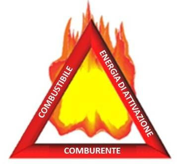
Così lo disegnano gli umani dei Vigili del Fuoco. Stessa magia, meno muschio. Se all'esame vedi questo triangolo rosso, è lui.
quattro modi per spezzare il sigilloGli incantesimi per spegnere
Ogni incantesimo toglie un pezzo al fuoco. Nella realtà se ne usano diversi insieme.
Esaurimento
L'allontanamento o la separazione del combustibile dal focolaio d'incendio.
es. chiudi la valvola del gasSoffocamento
La separazione del comburente dal combustibile, o la riduzione della concentrazione di comburente nell'aria. Togli l'ossigeno.
es. il coperchio sulla padellaRaffreddamento
La sottrazione di calore fino a una temperatura inferiore a quella necessaria a mantenere la combustione.
es. l'acqua sulla legnaInibizione chimica
Una sostanza speciale blocca la reazione del fuoco dall'interno. Si chiama anche anticatalisi.
es. alcune polveri degli estintoriIl quarto incantesimo non toglie nessun lato del triangolo: spezza la reazione in sé. Per questo è il "jolly".
prima di andare avantiLe prove della strega
Pensa alla risposta, poi tocca per scoprirla.
1Se manca uno dei tre lati del triangolo, cosa succede?
2Il coperchio sulla padella che prende fuoco: quale incantesimo è?
3Il comburente è una sostanza che, a contatto col combustibile, fa una reazione...
Capitolo 2
Le cinque creature del fuoco
le classi di fuoco, una per ogni bestia
Il combustibile può essere solido, liquido o gassoso, e gli incendi si dividono in cinque classi, A, B, C, D e F, secondo cosa sta bruciando.
Ogni creatura del fuoco mangia una cosa diversa e va affrontata con la pozione giusta (le vedrai nel capitolo 6). Per questo bisogna riconoscerle al volo.
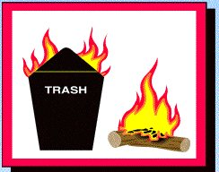
Classe A
i solidi che fanno braceIncendi di materiali solidi con formazione di braci: carta, cartoni, libri, legna, segatura.
A come Albero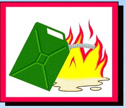
Classe B
i liquidi che brucianoIncendi di liquidi infiammabili e solidi che possono liquefare: petrolio, vernici, nafta, benzina, paraffina.
B come Benzina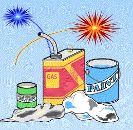
Classe C
i gasIncendi di gas infiammabili: metano, propano, GPL, idrogeno.
C come Camping gas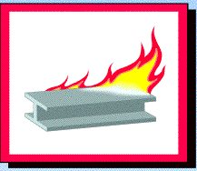
Classe D
i metalli e chi ha l'ossigeno dentroIncendi di metalli combustibili e sostanze chimiche che contengono ossigeno comburente: magnesio, potassio, fosforo, sodio, titanio, alluminio, carburi, nitrati, clorati, perclorati, perossidi.
D come metalli Duri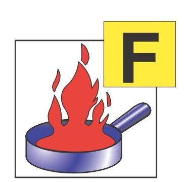
Classe F
lo spiritello della friggitriceIncendi che interessano sostanze usate nella cottura: oli e grassi vegetali o animali.
F come FriggitriceIl goblin della classe E
"E la classe E? Quella degli impianti elettrici! Sono sei classi, eh eh."
No: le classi sono cinque, A, B, C, D ed F. La E è stata abolita, perché i materiali degli apparecchi elettrici bruciano come la classe A o la B. Resta però un pericolo in più quando c'è corrente: la folgorazione (elettrocuzione).
Il fuoco in padella è classe F, non B, anche se l'olio è un liquido. Tutto ciò che si cucina sta nella F.
prima di andare avantiLe prove della strega
1Un cestino di carta che brucia: che classe è?
2Un incendio di magnesio o di sodio?
3Quante sono le classi di fuoco?
Capitolo 3
I numeri segreti della fiamma
temperature, limiti e campi: quando qualcosa prende fuoco
Ogni sostanza ha i suoi numeri segreti: a che temperatura si accende da sola, a che temperatura un liquido fa vapori pericolosi, e in che percentuale un gas nell'aria può bruciare o esplodere.
due temperature da non confondereAccensione e infiammabilità
Temperatura di accensione
Detta anche di autoaccensione o di ignizione: è la temperatura in corrispondenza della quale inizia la combustione. Più precisamente, è la minima temperatura alla quale una sostanza combustibile (solida, liquida o gassosa), in presenza di aria, inizia a bruciare spontaneamente, in modo continuo, senza bisogno di innesco né di energia dall'esterno.
Temperatura di infiammabilità
Vale solo per i liquidi. È la più bassa temperatura alla quale un combustibile liquido sviluppa vapori in quantità sufficiente da formare con l'aria una miscela che, in presenza di innesco, si accende.
Accensione = brucia da solo, senza innesco. Infiammabilità = solo liquidi, servono i vapori più l'innesco.
La regola d'oro sull'infiammabilità: più è bassa, più il liquido è pericoloso. La probabilità che si formino vapori capaci di prendere fuoco aumenta con il diminuire della temperatura di infiammabilità, quindi un liquido è più pericoloso se ha basse temperature di infiammabilità: diventa più facilmente infiammabile in presenza di innesco.
| Liquido | Temperatura di infiammabilità | Cosa significa |
|---|---|---|
| Benzina | -20 °C | Fa vapori infiammabili anche d'inverno: pericolosissima |
| Alcol etilico | 13 °C | A temperatura ambiente è già a rischio |
| Gasolio | 65 °C | Va scaldato prima di fare vapori pericolosi |
| Olio lubrificante | 149 °C | Difficile da accendere |
Curiosità che chiarisce tutto: la benzina si infiamma con vapori già a -20 °C, ma senza innesco si accende da sola solo a circa 250 °C, più della carta (230 °C).
né troppo poco, né troppoI limiti di infiammabilità
Un gas o un vapore brucia solo se è mescolato con l'aria nella dose giusta. I limiti di infiammabilità sono le percentuali in volume di combustibile nella miscela aria-combustibile entro le quali può avvenire la combustione.
- Limite inferiore: la minima concentrazione di combustibile, in fase gas, nella miscela aria-combustibile che, se innescata, dà una combustione capace di propagarsi a tutta la miscela. Sotto, la miscela è "troppo magra".
- Limite superiore: la massima concentrazione di combustibile nella miscela che, se innescata, dà ancora una combustione che si propaga a tutta la miscela. Sopra, è "troppo grassa": c'è troppo gas e poca aria.
- Campo di infiammabilità: l'intervallo di concentrazione compreso fra il limite inferiore e il limite superiore, caratteristico per ciascuna sostanza. Più è largo, più la sostanza è pericolosa.
quando il fuoco diventa un boatoI limiti di esplosività
Stessa idea, ma il risultato è un'esplosione invece di una fiamma. Il campo di esplosività è l'intervallo nel quale la percentuale in volume della miscela aria-combustibile, se innescata, dà origine a un'esplosione.
- Limite inferiore di esplosività: la minima concentrazione di combustibile nella miscela che, innescata, dà un'esplosione.
- Limite superiore di esplosività: la massima concentrazione di combustibile nella miscela che, innescata, dà un'esplosione.
Di solito il campo di esplosività sta dentro quello di infiammabilità.
prima di andare avantiLe prove della strega
1Un liquido con temperatura di infiammabilità bassa è più o meno pericoloso?
2Come si chiama la temperatura a cui una sostanza brucia da sola, senza innesco?
3Cos'è il campo di infiammabilità?
Capitolo 4
Solidi, liquidi e gas
tre modi di essere cibo per il fuoco
I solidi bruciano meglio se sono sminuzzati e secchi, i liquidi bruciano solo attraverso i loro vapori, e i gas si dividono in leggeri e pesanti: quelli pesanti strisciano in basso.
legno, carta, stoffaI solidi
La combustione dei solidi dipende da tutti questi fattori, nessuno escluso:
- tipologia, pezzatura e forma del materiale: la segatura brucia molto più in fretta di un tronco;
- grado di porosità;
- contenuto di umidità: il legno bagnato fatica a bruciare;
- ventilazione.
il liquido non brucia: brucia il suo fiatoI liquidi
Un liquido prende fuoco, in presenza di innesco, solo quando emette una quantità di vapori sufficiente, opportunamente miscelati con l'aria. In base alla temperatura di infiammabilità i liquidi vengono raggruppati in tre categorie: A, B e C.
21, 65, 125: la A è la più pericolosa perché fa vapori già a temperatura ambiente.
gli spiriti dell'ariaI gas
I combustibili gassosi sono le sostanze che si trovano allo stato gassoso nelle condizioni normali, cioè a pressione atmosferica e a una temperatura di circa 15 °C.
Gas leggeri
Densità rispetto all'aria minore di 0,8: metano, idrogeno. Liberati, salgono verso l'alto.
Gas pesanti
Densità rispetto all'aria maggiore di 0,8: GPL, acetilene. Liberati, restano in basso e si infilano in cunicoli e scantinati.
Per questo i vapori più pesanti dell'aria sono più pericolosi in locali sotterranei, e dove ci sono gas o vapori pesanti le aperture di ventilazione vanno messe a filo pavimento, dove il gas si accumula.
I gas si conservano in quattro modi diversi (compressi, liquefatti, refrigerati, disciolti), a seconda delle loro caratteristiche chimico-fisiche e in particolare della temperatura critica:
| Modo | Come funziona | Esempio da ricordare |
|---|---|---|
| Compressi | Gas sotto pressione nelle bombole o nelle tubature | la CO₂ (anidride carbonica) è conservata compressa |
| Liquefatti | Diventano liquidi con la pressione: un litro di liquido fa fino a 800 litri di gas. Le bombole non si riempiono mai del tutto: c'è un grado di riempimento massimo | il GPL è conservato liquefatto |
| Refrigerati | Tenuti liquidi col freddo, a pressione quasi normale | |
| Disciolti | Sciolti dentro un liquido | l'acetilene è conservato disciolto (in acetone) |
"Grado di riempimento" = gas liquefatti. Serve lasciare spazio al vapore sopra il liquido.
Il goblin del dardo di fuoco
"Un getto di fuoco esce da un tubo del gas? Spegni subito la fiamma con l'estintore!"
Sbagliato e pericoloso: se spegni la fiamma ma il gas continua a uscire, si forma una nuvola che può esplodere. Davanti a un dardo di fuoco da una fuga di gas si procede subito all'intercettazione della fuga di gas: si chiude la valvola, e la fiamma muore da sola.
prima di andare avantiLe prove della strega
1Il GPL è un gas leggero o pesante?
2Un liquido con infiammabilità a 40 °C, che categoria è?
3Come si conserva l'acetilene?
Capitolo 5
Il calore e le scintille
come viaggia il calore e cosa accende il fuoco
Il calore è la causa principale della propagazione degli incendi: viaggia per conduzione, convezione e irraggiamento, e basta una scintilla, uno sfregamento o una stufa troppo vicina per svegliare il fuoco.
i tre sentieri del caloreCome viaggia il calore
I meccanismi con cui una sorgente di calore scalda un combustibile sono tre: conduzione, convezione e irraggiamento.
Conduzione
La trasmissione di calore che avviene in un mezzo solido, liquido o aeriforme dalle zone a temperatura maggiore verso quelle con temperatura minore, all'interno di un corpo solo o tra due corpi a contatto.
il cucchiaio nella pentola che scottaConvezione
Succede nei fluidi (aria, acqua): il fluido caldo sale e quello freddo scende. La propagazione del calore è associata al trasporto di materia.
il fumo caldo che sale al soffittoIrraggiamento
La radiazione elettromagnetica emessa dalla superficie di un corpo che si trova a una certa temperatura. Funziona anche a distanza e perfino nel vuoto. Tutti gli oggetti emettono radiazioni elettromagnetiche, solo per il fatto di avere una temperatura.
il calore del sole o del camino sulla pelle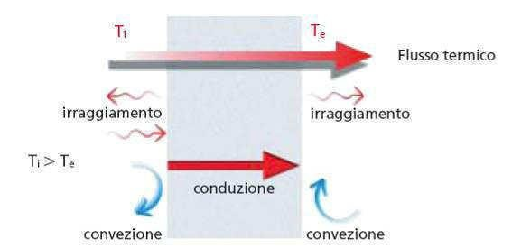
Gli umani lo disegnano così: il calore passa la parete per conduzione, e ai due lati viaggia per convezione e irraggiamento.
quanto è forte una sorgenteWatt e potenza termica
Il watt è l'unità di misura della potenza nel Sistema Internazionale: 1 watt è il rapporto tra joule e secondo, cioè un joule di energia al secondo. La potenza termica è la quantità di calore per unità di tempo che una sorgente d'ignizione è in grado di trasferire.
chi si scalda in fretta e chi noCapacità termica e calore specifico
- Capacità termica: la quantità di calore che occorre fornire al materiale per aumentarne la temperatura di un grado centigrado. Una sostanza con alta capacità termica riesce ad assorbire tanto calore innalzando di poco la propria temperatura.
- Calore specifico: la quantità di calore necessaria per innalzare di 1 °C la temperatura dell'unità di massa (1 kg).
Il più alto: l'acqua
4180 J/kg°C. Per scaldarla serve tantissima energia: per questo l'acqua raffredda così bene il fuoco.
Il più basso: il piombo
129 J/kg°C. I metalli in genere hanno calori specifici bassi: con poca energia è possibile ottenere un considerevole aumento della temperatura.
cosa sveglia il fuocoLe sorgenti di innesco
Perché parta l'incendio serve un'adeguata sorgente di calore che dia la necessaria energia per l'avvio, superiore all'energia di attivazione. Le principali sorgenti sono tutte queste: fiamme, superfici calde, scintille e archi elettrici, attrito, radiazioni termiche, reazioni chimiche che liberano calore, autocombustione.
- Attrito: calore che nasce quando c'è sfregamento tra due materiali, come un cuscinetto che gira senza olio.
- Autocombustione (riscaldamento spontaneo): il calore viene prodotto dallo stesso combustibile, che si innesca senza sorgenti esterne. Succede con stracci sporchi d'olio o mucchi di fieno umido.
- Calore radiante di caminetti e stufe: sì, può innescare un incendio, se il materiale investito raggiunge la temperatura di accensione. Mai tende e vestiti vicino alla stufa.
cosa lascia dietro di séI prodotti della combustione
Una combustione produce calore, fiamme, gas e fumi.
- Gas di combustione: i prodotti che restano allo stato gassoso anche quando, raffreddandosi, raggiungono la temperatura ambiente.
- Fiamme: l'emissione di luce dovuta alla combustione dei gas sviluppati dall'incendio.
- Fumi: piccolissime particelle solide (aerosol) e liquide (nebbie o vapori condensati) disperse nei gas prodotti dalla combustione.
prima di andare avantiLe prove della strega
1Quale sostanza ha il calore specifico più alto, tra acqua, ferro e piombo?
2Nella convezione il calore viaggia insieme alla materia?
3Uno straccio unto che prende fuoco da solo in un angolo: che innesco è?
Capitolo 6
Le pozioni che spengono
gli estinguenti e i loro poteri
Gli estinguenti sono pozioni che interrompono la combustione, ma ognuna funziona solo in certi modi e su certi fuochi: la scelta giusta dipende dalla pozione, da quanto è grande il fuoco e da cosa sta bruciando.
Le sostanze estinguenti sono sostanze che hanno la proprietà di interrompere la combustione. Lo fanno con i quattro incantesimi del capitolo 1: raffreddamento, sottrazione del combustibile, soffocamento e inibizione chimica.
Attenzione però: i principi di spegnimento non sono gli stessi per tutti. Ciascun agente estinguente, generalmente, è in grado di esercitare in modo efficace solo alcune specifiche azioni di spegnimento.
Come pozioni si usano tutte queste: acqua, schiuma, polveri, gas inerti (argon, azoto) e anidride carbonica.
lo scaffale della stregaLe pozioni e i loro poteri
Acqua
Agisce per raffreddamento e soffocamento (il vapore toglie aria).
regina dei fuochi di classe ASchiuma
Una miscela di acqua, liquido schiumogeno e aria (o altro gas inerte). Molto efficace su incendi che coinvolgono combustibili solidi e liquidi infiammabili: fa una coperta che soffoca.
ottima su benzina e verniciPolvere
Agisce in tutti i modi: raffreddamento e soffocamento, più inibizione chimica. Ma non è sempre idonea per qualunque classe: esistono diverse tipologie di polveri che danno prestazioni diverse a seconda della classe di incendio.
leggi sempre l'etichettaAnidride carbonica (CO₂)
Agisce per soffocamento e raffreddamento: esce freddissima.
pulita, non lascia residuiGas inerti (azoto, argon)
Agiscono per soffocamento: tolgono l'ossigeno.
non conducono correntecome si sceglieLa pozione giusta
La scelta dell'agente estinguente dipende dalle caratteristiche della sostanza estinguente, dalle dimensioni del fuoco prevedibile e dalla natura dei combustibili. Non solo da una di queste cose, e non dal giudizio a occhio del datore di lavoro.
Le sostanze estinguenti gassose non sono ugualmente efficaci su tutte le classi: sono generalmente molto efficaci su incendi di liquidi e gas infiammabili o, non essendo conduttrici, su incendi che coinvolgono apparecchiature e impianti elettrici sotto tensione.
le controindicazioniQuando l'acqua è proibita
| Situazione | Acqua? |
|---|---|
| Impianti elettrici sotto tensione | Sì, è generalmente vietata: conduce la corrente |
| Sostanze che reagiscono con l'acqua in modo violento ed esplosivo, o che fanno prodotti tossici o corrosivi | Sì, è vietata |
| Ambienti con apparecchiature delicate e documenti | Sì, può essere sconsigliata per i danni che farebbe |
E la schiuma? Ha le stesse limitazioni di impiego dell'acqua, perché l'acqua ne è un componente essenziale.
E la CO₂? È generalmente sconsigliata su apparecchiature sensibili alle brusche variazioni di temperatura, perché esce gelida.
Il goblin della polvere magica
"La polvere va bene su tutto, sempre! E i gas spengono ogni fuoco allo stesso modo!"
Due bugie in una frase. Le polveri cambiano secondo la classe di fuoco, e i gas sono bravi soprattutto su liquidi, gas e impianti elettrici.
prima di andare avantiLe prove della strega
1Come agisce la CO₂?
2Perché la schiuma non si usa su un quadro elettrico in tensione?
3Come agiscono azoto e argon?
Capitolo 7
La vita di un incendio
il rischio, le fasi, cosa fa il fuoco alle persone
Un incendio nasce piccolo, si allarga, esplode nel flash over e poi si spegne; a uccidere le persone sono soprattutto il fumo e i gas, non le fiamme.
quanto ci si deve preoccupareIl rischio d'incendio
Il rischio di incendio è la probabilità che l'incendio si verifichi (frequenza) e l'entità dei danni sulle persone e sui beni (magnitudo). In formula: R = P × M.
L'incendio è una combustione in atmosfera di ossigeno (quello dell'aria), che avviene in un luogo non predisposto ad accoglierla e che per questo spesso sfugge al controllo dell'uomo.
Per le persone, il rischio (Rvita) dipende da due cose: la caratteristica prevalente degli occupanti (δocc) e la velocità caratteristica prevalente di crescita dell'incendio.
Chi c'è dentro (δocc)
Le caratteristiche prevalenti degli occupanti, classificate in 5 categorie (A, B, C, D, E) in base allo stato di veglia e alla conoscenza del luogo. A: svegli e conoscono il posto (uffici, fabbriche). B: svegli ma non lo conoscono (negozi, ristoranti). C: possono dormire (case, alberghi). D: ricevono cure mediche (ospedali). E: in transito (stazioni, aeroporti).
Quanto corre il fuoco (δα)
La velocità di crescita, riferita al tempo t in secondi che serve alla potenza termica per raggiungere 1000 kW. Va da 1 (lenta) a 4 (ultrarapida): plastica, scaffali alti e sostanze pericolose la fanno salire.
nascita, furia e morteLe fasi di un incendio
Le fasi caratteristiche sono: fase di ignizione, fase di propagazione, punto di flash over, fase di incendio generalizzato e fase di estinzione (raffreddamento).
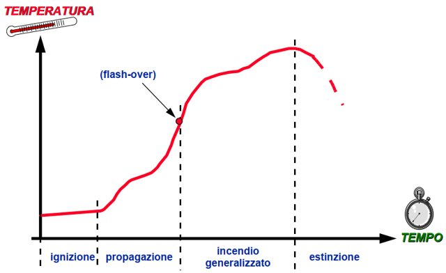
La curva della temperatura: sale piano, poi di colpo schizza in alto (è il flash over), resta altissima e infine scende.
- Ignizione: un focolaio d'incendio che interessa una zona limitata dell'ambiente. È il momento giusto per l'estintore.
- Propagazione: brucia anche ciò che sta vicino alla zona di innesco, con aumento rapido della temperatura e dell'energia di irraggiamento.
- Incendio generalizzato: la transizione da incendio localizzato alla propagazione delle fiamme a tutto il volume, con brusco aumento della temperatura, il flash over (oltre 500 °C) e una crescita esponenziale della velocità di combustione. Il flash over è proprio l'istante di propagazione generalizzata dell'incendio.
- Estinzione e raffreddamento: inizia quando la maggior parte del combustibile è bruciato, e la temperatura scende perché il materiale rimasto scalda sempre meno.
La severità dell'incendio dipende da tutti questi fattori: quantità, tipologia e distribuzione dei combustibili, ventilazione e geometria degli ambienti.
il vero nemicoCosa fa il fuoco alle persone
I principali effetti sull'uomo vengono dai prodotti della combustione: anossia (riduzione dell'ossigeno nell'aria), azione tossica dei gas, riduzione della visibilità per il fumo e azione termica del calore.
Le difficoltà respiratorie durante un incendio arrivano soprattutto per la riduzione del tasso di ossigeno nell'aria:
Monossido di carbonio (CO)
Si forma negli ambienti chiusi quando manca ossigeno. È tossico: combinandosi con l'emoglobina dei globuli rossi, impedisce all'ossigeno di raggiungere le cellule. Ed è subdolo: inodore, incolore e non irritante, quindi l'uomo non si accorge della sua presenza.
Anidride carbonica (CO₂)
È un gas asfissiante che, pur non producendo effetti tossici, è pericoloso perché si sostituisce all'ossigeno nell'aria.
CO = il fantasma tossico (non lo vedi, non lo senti). CO₂ = il ladro d'aria (non avvelena, ruba l'ossigeno).
prima di andare avantiLe prove della strega
1Che cos'è il flash over?
2Il CO si riconosce dall'odore?
3In quante categorie si dividono gli occupanti, e in base a cosa?
Capitolo 8
Gli scudi del villaggio
prevenzione e protezione, attiva e passiva
La prevenzione fa in modo che l'incendio non nasca, la protezione limita i danni se nasce comunque; e la protezione è attiva se qualcuno deve azionarla, passiva se funziona da sola.
Nei luoghi di lavoro, per il D.Lgs. 81/2008, è sempre obbligatorio per il datore di lavoro adottare misure per prevenire gli incendi e proteggere le persone. Il rischio si abbassa con tre tipi di misure insieme: misure di prevenzione (per esempio impianti a regola d'arte), di protezione (estintori, idranti) e misure precauzionali di esercizio (gestionali). Non bastano una o due da sole.
Prevenzione
Tutte le misure che riducono il rischio riducendo la probabilità/frequenza che l'incendio accada. Esempio: impianti fatti a regola d'arte.
Protezione
Tutte le misure che riducono il rischio riducendo il danno se l'incendio accade: impianti antincendio, porte tagliafuoco, vie di esodo.
scudi che si alzano da soli, e scudi da impugnareProtezione attiva e passiva
Attiva
Dispositivi che, dopo che l'incendio è stato rivelato, per proteggere hanno bisogno di un intervento o di un'azione (di un impianto o di una persona).
estintori, idranti, naspi: qualcuno deve usarliPassiva
Dispositivi che proteggono senza richiedere alcuna azione, né di un impianto né di una persona.
vie di esodo, porte tagliafuoco: ci sono e basta- Estintori, idranti, naspi (i sistemi di controllo dell'incendio): protezione attiva.
- Il sistema di esodo (vie di esodo verticali e orizzontali): protezione passiva.
- Le porte EI tagliafuoco: protezione passiva.
Il goblin della porta magnetica
"La porta tagliafuoco tenuta aperta dal magnete, che si chiude quando scatta l'allarme? Quella è attiva, c'è un impianto che la comanda!"
No. Le porte EI con fermi elettromagnetici in apertura collegati all'impianto di allarme (IRAI) restano protezione passiva: il magnete serve solo a tenerle aperte nella vita di tutti i giorni, la protezione la fa la porta chiusa.
le buone abitudini della stregaLe misure di prevenzione
La probabilità che scoppi un incendio aumenta con la presenza di sorgenti di innesco. Per prevenirlo si lavora su più fronti, e la prevenzione si ottiene anche riducendo gli inneschi efficaci e il quantitativo di materiale combustibile negli ambienti.
| Misura | Perché funziona |
|---|---|
| Pulizia dei luoghi e mantenimento dell'ordine | Sono misure preventive: riducono la probabilità di innesco e la velocità di crescita dei focolai |
| Controllo e manutenzione regolare di impianti elettrici, gas, impianti termici | Rientrano tra le azioni necessarie per prevenire gli incendi |
| Gestione dei lavori di manutenzione o di modifica (cantieri) | Rientra tra le azioni necessarie per prevenire gli incendi: i lavori portano inneschi nuovi |
| Formazione e informazione del personale sui rischi | Contribuisce alla mitigazione del rischio (Codice di Prevenzione Incendi, D.M. 3 agosto 2015) |
| Istruzioni e segnaletica con divieti e precauzioni | È una misura di prevenzione incendi |
| Impianti progettati e realizzati a regola d'arte (elettrici, gas, riscaldamento) | Sì, è prevenzione: vanno fatti in modo da limitare la probabilità di essere causa di incendio ed esplosione |
| Controllo degli ambienti: vie di esodo libere, porte che si aprono | Sì: verificare le condizioni di esercizio previste dal progetto è fondamentale per tenere basso il rischio |
| Locale con liquidi infiammabili | Si riduce il pericolo dotandolo di aperture di ventilazione naturale, così i vapori non si accumulano |
prima di andare avantiLe prove della strega
1Un naspo è protezione attiva o passiva?
2Le vie di esodo sono prevenzione, protezione attiva o protezione passiva?
3Tenere pulito e in ordine è prevenzione o protezione?
Capitolo 9
Le rune
la segnaletica di sicurezza
Le rune della sicurezza si leggono da forma e colore: tondo rosso vieta, triangolo giallo avverte, tondo azzurro obbliga, quadrato verde salva, quadrato rosso indica l'attrezzatura antincendio.
La segnaletica di sicurezza è una segnaletica che, riferita a un oggetto, un'attività o una situazione, fornisce un'indicazione o una prescrizione sulla sicurezza, usando a seconda dei casi un cartello, un colore, un segnale luminoso o acustico, una comunicazione verbale o un segnale gestuale. Contribuisce alla prevenzione e protezione dagli incendi: sì, favorisce la corretta gestione dell'attività anche ai fini della sicurezza antincendio.
Forme e colori dei cartelli sono puntualmente definiti nel D.Lgs. 81/2008, in funzione di cosa indicano: divieto, avvertimento, prescrizione, salvataggio, attrezzature antincendio.
cinque famiglie di runeRiconoscerle a colpo d'occhio
| Runa | Forma e colori | Cosa fa |
|---|---|---|
| Divieto | Rotonda, pittogramma nero su fondo bianco, bordo e banda rossi (la banda scende da sinistra a destra, inclinata di 45°) | Vieta un comportamento che potrebbe far correre o causare un pericolo |
| Avvertimento | Triangolare, pittogramma nero su fondo giallo, bordo nero | Avverte di un rischio o pericolo |
| Prescrizione | Rotonda, pittogramma bianco su fondo azzurro | Prescrive un determinato comportamento (un obbligo) |
| Salvataggio e soccorso | Quadrata o rettangolare, pittogramma bianco su fondo verde | Indica le uscite di sicurezza o i mezzi di soccorso o di salvataggio |
| Attrezzature antincendio | Quadrata o rettangolare, pittogramma bianco su fondo rosso | Indica dove si trovano i presidi antincendio |
Tondo rosso = no. Triangolo giallo = attenzione. Tondo azzurro = devi. Verde = di qua ti salvi. Quadrato rosso = qui c'è l'arma contro il fuoco.
il libro delle runeLe rune che escono all'esame
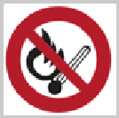
Divieto: vietato usare fiamme libere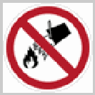
Divieto: vietato usare acqua per spegnere le fiamme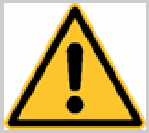
Avvertimento: pericolo generico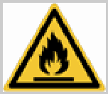
Avvertimento: presenza di sostanze infiammabili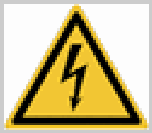
Avvertimento: esposizione a un rischio elettrico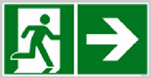
Salvataggio: la via di esodo è a destra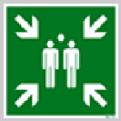
Salvataggio: il punto di raccolta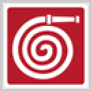
Attrezzatura: lancia antincendio "idrante"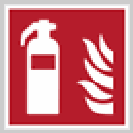
Attrezzatura: estintoreIl goblin dei tubi
"Il tubo arrotolato a spirale è il naspo, lo sanno tutti!"
All'esame no. Nella banca dati il naspo è il cartello col tubo appeso a zig-zag e la fiamma accanto, l'idrante è quello col tubo a spirale. Imparali come sono qui, anche se ti sembra al contrario.
prima di andare avantiLe prove della strega
1Cartello rotondo con fondo azzurro e simbolo bianco: che tipo è?
2Triangolo giallo con un fulmine?
3Quadrato rosso con una bombola?
Capitolo 10
I guardiani dei presidi
chi controlla, chi ripara, chi sorveglia
I presidi antincendio vanno tenuti sempre efficienti: guardarli tutti i giorni lo può fare chiunque sia stato istruito, ma controllarli e ripararli spetta solo al tecnico manutentore qualificato.
Il datore di lavoro è responsabile dei controlli e della manutenzione dei presidi antincendio: sono obbligatori, per garantire la loro costante efficienza e il regolare funzionamento. La manutenzione la fa personale qualificato: il D.M. 1 settembre 2021 ha introdotto apposta la figura del tecnico manutentore.
Il tecnico manutentore qualificato è una persona fisica che ha i requisiti tecnico-professionali del D.M. 1 settembre 2021 (conoscenza, competenza, abilità).
tre guardiani, tre compitiChi fa cosa
Sorveglianza
Lo svolgimento dei controlli visivi dei presidi, per verificare che siano nelle normali condizioni operative, correttamente fruibili e senza danni materiali evidenti.
la può fare anche un lavoratore, dopo aver ricevuto istruzioni adeguateControllo periodico
L'insieme di operazioni, fatte con frequenza non superiore a quella indicata da norme, specifiche tecniche o manuali, per verificare la completa e corretta funzionalità di impianti e attrezzature.
solo il tecnico manutentore qualificatoManutenzione
Un'operazione o un intervento finalizzato a mantenere in efficienza e in buono stato impianti, attrezzature e altri sistemi di sicurezza antincendio.
personale qualificato- La sorveglianza può essere effettuata anche dai lavoratori normalmente presenti, dopo aver ricevuto adeguate istruzioni.
- Il controllo periodico può essere effettuato solo da un tecnico manutentore qualificato, perché richiede competenze, conoscenze e abilità adeguate.
Se senti la parola "visivo", è sorveglianza e la può fare chiunque sia istruito. Tutto il resto è roba da tecnico.
prima di andare avantiLe prove della strega
1Un collega controlla che l'estintore sia al suo posto e non ammaccato. Che attività è?
2Chi può fare il controllo periodico?
3Quale decreto ha introdotto il tecnico manutentore?
Capitolo 11
Le terre maledette
aree a rischio specifico ed esplosioni
Alcune zone sono più pericolose del resto e vanno individuate apposta; dove gas, vapori o polveri si mescolano all'aria il fuoco può diventare un'esplosione, lenta come una deflagrazione o più veloce del suono come una detonazione.
dove il bosco è più scuroLe aree a rischio specifico
Sono ambiti dell'attività con un rischio di incendio sostanzialmente differente rispetto a quello tipico dell'attività: una centrale termica in un ufficio, un deposito di vernici in un negozio.
Chi le individua? Il progettista della sicurezza antincendio, sulla base delle regole tecniche di prevenzione incendi, della valutazione del rischio incendio e dei criteri di progettazione generale.
quando il fuoco urlaLe esplosioni
L'esplosione è il risultato di una rapida espansione di gas, causata da una reazione di combustione molto veloce. Fa sovrappressione e onde d'urto.
Le atmosfere esplosive sono miscele con l'aria di sostanze infiammabili allo stato di gas, vapori, nebbie o polveri, a condizioni atmosferiche, in cui, dopo l'accensione, la combustione si propaga a tutta la miscela incombusta.
Le sostanze che possono esplodere sono tutte queste: le miscele infiammabili di gas o vapori e anche le polveri combustibili sospese nell'aria (farina, segatura, zucchero).
Deflagrazione
La combustione si propaga alla miscela non ancora bruciata con una velocità minore di quella del suono.
Detonazione
La reazione procede con una velocità superiore a quella del suono: velocità supersoniche, dell'ordine del chilometro al secondo.
Detonazione = Di più veloce del suono. Deflagrazione = più lenta.
la runa EX e le sue zoneLe zone ATEX
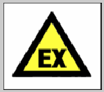
Questo triangolo giallo con la scritta EX è un segnale di avvertimento che indica le aree in cui possono formarsi atmosfere esplosive.
Il numero più basso è la zona dove l'atmosfera esplosiva c'è più spesso: zona 0 e zona 20 vogliono dire presenza continua o per lunghi periodi.
prima di andare avantiLe prove della strega
1Le polveri possono esplodere?
2Una detonazione è più veloce o più lenta del suono?
3Zone ATEX delle polveri?
Capitolo 12
Pelle e corazza
reazione al fuoco e resistenza al fuoco
La reazione al fuoco dice quanto un materiale aiuta il fuoco a nascere e correre; la resistenza al fuoco dice per quanti minuti una struttura regge, trattiene il fumo e blocca il calore.
la pelle: quanto un materiale si lascia bruciareLa reazione al fuoco
La reazione al fuoco è il comportamento di un materiale che, decomponendosi, partecipa al fuoco al quale è sottoposto in specifiche condizioni. È una misura di protezione passiva che fa il suo lavoro soprattutto nella fase iniziale dell'incendio, con l'obiettivo di limitare l'innesco dei materiali e la propagazione dell'incendio.
Le classi di reazione al fuoco sono determinate sperimentalmente, con prove di laboratorio:
| Sigle | Cosa classificano |
|---|---|
| 0, 1, 2, 3, 4, 5 | Le classi italiane di reazione al fuoco dei materiali (0 = non brucia) |
| 1 IM, 2 IM, 3 IM | La reazione al fuoco dei mobili imbottiti (IM = imbottiti) |
| A1, A2, B, C, D, E, F | Le classi europee dei prodotti da costruzione (A1 = la migliore) |
Numeri = Italia. IM = divani e poltrone. Lettere A1-F = Europa, materiali da costruzione.
la corazza: quanto una struttura resisteLa resistenza al fuoco
La resistenza al fuoco è la capacità portante in caso di incendio di una struttura, di una sua parte o di un elemento strutturale, e la capacità di compartimentazione degli elementi di separazione, sia strutturali (muri, solai) sia non strutturali (porte, divisori).
A cosa serve: garantire la capacità portante delle strutture e la capacità di compartimentazione per un tempo minimo necessario a raggiungere gli obiettivi di sicurezza.
La classe di resistenza al fuoco (R 60, R 90...) è un intervallo di tempo espresso in minuti, definito in base al carico di incendio specifico di progetto, durante il quale il compartimento garantisce la resistenza al fuoco. Le classi sono codificate dalle norme: per esempio, per elementi portanti senza funzione di compartimento, R 15, 20, 30, 45, 60 e così via.
R
capacità portanteL'elemento porta i carichi in condizioni di incendio normalizzato per un certo tempo. Non crolla.
E
tenutaL'elemento impedisce il passaggio di fumi e gas caldi per un certo tempo.
I
isolamentoL'elemento impedisce il passaggio del calore per un certo tempo: dall'altra parte non scotta.
La capacità di compartimentazione è l'attitudine di un elemento a conservare, sotto l'azione del fuoco, un sufficiente isolamento termico (I) e una sufficiente tenuta ai fumi e ai gas caldi (E), più le altre prestazioni se richieste. Insomma: E + I.
Il goblin della porta debole
"Il muro è REI 120? Allora la porta basta che sia REI 60, tanto è solo una porta!"
No: in un compartimento di classe 120, la porta deve avere una resistenza al fuoco uguale a quella della struttura attraversata. Una porta debole è un buco nella corazza.
Si può costruire senza resistenza al fuoco (livello di prestazione I del D.M. 3 agosto 2015)? Sì, ma solo se l'attività non prevede la presenza di occupanti, salvo la presenza occasionale e di breve durata del personale addetto.
prima di andare avantiLe prove della strega
1Cosa significa la E di REI?
2Cosa garantisce un elemento R 60?
3Le classi A1, A2, B, C, D, E, F cosa sono?
Capitolo 13
I muri incantati
compartimentazione e carico d'incendio
Si chiude il fuoco in una stanza con muri e porte che resistono, oppure lo si tiene lontano con la distanza; e la quantità di roba che può bruciare in un posto si misura col carico d'incendio, che poi va rispettato.
chiudere il drago in una stanzaLa compartimentazione
Serve a limitare la propagazione dell'incendio e dei suoi effetti verso altre attività (di un altro responsabile o di tipo diverso) e all'interno della stessa attività. Si realizza in entrambi questi modi:
- con elementi, strutturali e non, che sotto il fuoco conservano per un certo tempo resistenza, tenuta ai fumi e isolamento;
- con distanze di separazione tra edifici o altri bersagli combustibili, anche in spazio a cielo libero.
| Nome | Cos'è |
|---|---|
| Compartimento | Parte dell'edificio delimitata da elementi capaci di garantire, sotto l'azione del fuoco e per un dato intervallo di tempo, la resistenza al fuoco (EI...) |
| Filtro | Un compartimento dove, per basso carico di incendio e pochissimi inneschi, la probabilità che un incendio parta è trascurabile |
| Compartimento a prova di fumo | Fatto per limitare l'ingresso del fumo di un incendio che si sviluppa in compartimenti comunicanti |
| Filtro a prova di fumo | Le due cose insieme: è un filtro (incendio improbabile) e un compartimento a prova di fumo (non entrano gli effluenti dell'incendio) |
Perché la compartimentazione funzioni, pareti e solai devono essere una barriera continua: la continuità delle chiusure orizzontali e verticali è fondamentale, quindi vanno realizzate con molta cura, comprese giunzioni e serrande tagliafuoco. Ogni buco per cavi e tubi è una porta per il fuoco.
La porta tagliafuoco (EI)
È l'elemento di chiusura di un varco di comunicazione tra compartimenti adiacenti, capace di limitare per un determinato intervallo di tempo la propagazione degli effetti di un incendio.
va segnalata su entrambi i lati e tenuta sotto sorveglianza, controllo e manutenzionequando c'è il cielo in mezzoLo spazio aperto non basta
Tra attività separate da uno spazio a cielo libero l'incendio può propagarsi lo stesso, per irraggiamento. Per questo bisogna sempre verificare che ci sia un'adeguata distanza di separazione.
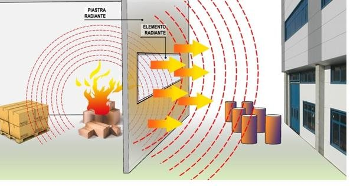
Il calore salta il vuoto. Una distanza "d" adeguata tiene l'irraggiamento sotto i valori critici e protegge gli edifici e i depositi vicini.
- Un'adeguata distanza tra edifici, o tra edifici e depositi esterni di combustibile, limita l'irraggiamento al di sotto dei valori critici.
- Un cortile qualsiasi non basta: per essere uno "spazio scoperto" un'area a cielo libero deve avere una superficie determinata e un'adeguata distanza fra gli edifici che la delimitano.
quanta legna c'è nella stanzaIl carico d'incendio
| Termine | Definizione | Unità |
|---|---|---|
| Carico di incendio | Potenziale termico netto di tutti i materiali combustibili contenuti in uno spazio, corretto in base a quanto ciascun materiale partecipa alla combustione | MJ |
| Carico di incendio specifico | Lo stesso, riferito all'unità di superficie lorda di piano | MJ/m² |
| Carico di incendio specifico di progetto | Lo specifico (MJ/m²) corretto in base ai parametri del rischio di incendio del compartimento e alle misure antincendio presenti | MJ/m² |
- Il carico d'incendio è un parametro fondamentale della progettazione: in particolare quello specifico di progetto serve a progettare la resistenza al fuoco delle strutture.
- I valori usati nel progetto sono un vincolo d'esercizio: mantenere le condizioni che li hanno determinati è un obbligo. Non puoi riempire il magazzino oltre quanto previsto.
prima di andare avantiLe prove della strega
1Cos'è un filtro?
2Il carico d'incendio specifico in che unità si misura?
3Un incendio può saltare da un edificio all'altro attraverso un cortile?
Capitolo 14
Il sentiero fuori dal bosco
l'esodo: luoghi sicuri e modi di uscire
Il sistema di esodo serve a portare tutti in un luogo sicuro, da soli o con aiuto, prima che il fuoco renda l'aria irrespirabile; e ci sono quattro modi diversi di uscire dal bosco.
La misura Esodo (la S.4 del Codice di Prevenzione Incendi) ha lo scopo di assicurare che gli occupanti possano raggiungere un luogo sicuro o restare al sicuro, autonomamente o con assistenza, prima che l'incendio determini condizioni incapacitanti negli ambienti dove si trovano.
Il Sistema di Esodo è l'insieme delle misure di salvaguardia della vita che permettono proprio questo: raggiungere un luogo sicuro o restare al sicuro, da soli o aiutati, prima delle condizioni incapacitanti.
la mappa del boscoI luoghi dell'esodo
| Luogo | Cos'è |
|---|---|
| Luogo sicuro | Un luogo dove il rischio d'incendio è permanentemente trascurabile per chi ci sta o ci passa |
| Luogo sicuro temporaneo | Un luogo dove il rischio è temporaneamente trascurabile per chi ci sta o ci passa durante l'esodo |
| Spazio calmo | Un luogo sicuro temporaneo dove gli occupanti possono attendere e ricevere assistenza per completare l'esodo verso il luogo sicuro (pensato per chi non scende le scale da solo) |
| Via di esodo | Un percorso senza ostacoli al deflusso, parte del sistema di esodo, che porta gli occupanti dal punto in cui sono a un luogo sicuro |
| Corridoio cieco | Una porzione di via di esodo da cui si può uscire in un'unica direzione |
- La pubblica via è luogo sicuro? Sì, sempre.
- Uno spazio a cielo libero è luogo sicuro solo se è collegato alla pubblica via in ogni condizione di incendio, protegge le persone dai prodotti della combustione e dal pericolo di crolli, ed è abbastanza ampio per contenere chi ci arriva.
quattro modi di lasciare il boscoLe modalità di esodo
Le modalità sono diverse: esodo simultaneo, esodo per fasi, esodo orizzontale progressivo e protezione sul posto.
Simultaneo
Prevede lo spostamento contemporaneo degli occupanti fino al luogo sicuro. Tutti fuori insieme.
Per fasi
In una struttura con più compartimenti, l'evacuazione fino al luogo sicuro avviene in successione, dopo aver evacuato il compartimento di primo innesco.
Orizzontale progressivo
Gli occupanti si spostano dal compartimento di primo innesco in un compartimento adiacente, capace di contenerli e proteggerli finché l'incendio è spento o finché si può proseguire verso il luogo sicuro.
tipico degli ospedaliProtezione sul posto
Prevede la protezione degli occupanti nell'ambiente in cui si trovano.
come dev'essere il sentieroI requisiti
- Nel sistema di esodo non si possono considerare scale portatili, ascensori e rampe con pendenza superiore al 20%.
- Le superfici (corridoi, scale, androni) non devono essere sdrucciolevoli, né presentare avvallamenti o sporgenze pericolose, e devono rendere sicuro il passaggio.
- Le porte lungo le vie di esodo devono essere facilmente identificabili e apribili da tutti, e la loro apertura non deve ostacolare il deflusso.
- Con elevata densità di affollamento, le porte manuali devono avere dispositivi di apertura a semplice spinta (il maniglione antipanico).
- Il sistema di esodo deve essere sempre riconoscibile, mediante apposita segnaletica di sicurezza. Le planimetrie da sole non bastano.
- La lunghezza d'esodo si valuta sulla base della valutazione del rischio e del profilo di rischio vita.
le rune verdi del sentieroI cartelli dell'esodo
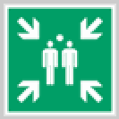
Persone e frecce verso il centro: luogo sicuro, punto di ritrovo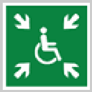
Sedia a rotelle e frecce verso il centro: spazio calmo, attesa dei soccorritori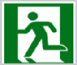
Omino che corre verso la porta: via di esodo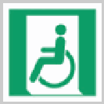
Sedia a rotelle dentro una porta: via di esodo verso spazio calmoprima di andare avantiLe prove della strega
1Si può usare l'ascensore normale per l'esodo?
2Che differenza c'è tra luogo sicuro e spazio calmo?
3Ci si sposta nel compartimento accanto e si aspetta lì: che modalità è?
Capitolo 15
Le misure del sentiero
lunghezze, larghezze, luci e porte
Il sentiero di fuga ha misure precise: lunghezze massime, larghezze minime secondo quante persone ci passano, almeno due metri di altezza, e luci che non lasciano mai al buio.
i numeri magici del sentieroLunghezze e larghezze
Le vie di esodo devono essere di lunghezza limitata, secondo il rischio dell'attività (Codice di Prevenzione Incendi, D.M. 3 agosto 2015):
Il corridoio cieco è più corto perché da lì si esce da una parte sola: 10-45 contro 20-70.
L'altezza di 2 metri vale sempre, tranne brevi tratti segnalati usati solo da personale formato, o usati occasionalmente da poche persone.
| Larghezza minima | Quando è consentita |
|---|---|
| 80 cm, vie orizzontali | Solo se l'affollamento non è elevato: massimo 50 occupanti |
| 90 cm, vie verticali (scale) | Solo se l'affollamento non è molto elevato: massimo 300 occupanti |
| 1,20 m, vie orizzontali e verticali | Obbligatoria con più di 1000 occupanti, a prescindere dal numero di vie di esodo disponibili |
50 persone, 80 cm. 300 persone, 90 cm. Oltre 1000, sempre 1 metro e 20.
quante usciteIl numero di vie
Per evitare che l'incendio blocchi l'unica uscita, il numero minimo di vie di esodo e di uscite indipendenti da ogni locale va progettato in funzione del rischio di incendio e dell'affollamento.
Se a un piano ci sono in modo non occasionale persone che non possono raggiungere da sole un luogo sicuro scendendo le scale, bisogna adottare almeno una di queste soluzioni: spazi calmi, esodo orizzontale progressivo o esodo orizzontale verso luogo sicuro.
le lucciole del sentieroLe luci
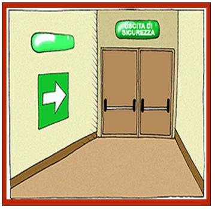
L'illuminazione di sicurezza lungo le vie di esodo va installata sempre, quando l'illuminazione normale può risultare anche solo occasionalmente insufficiente per uscire.
Dove si lavora con luce assente o ridotta (cinema, teatri), i gradini lungo le vie di esodo devono avere sempre l'illuminazione "segnapasso".
prima di andare avantiLe prove della strega
1Un corridoio largo 80 cm va bene per 200 persone?
2Lunghezza massima dei corridoi ciechi?
3Con 1500 persone, quanto devono essere larghe le scale?
Capitolo 16
Campane e camini
rivelazione, allarme e controllo di fumo e calore
Prima si scopre il fuoco e si suona la campana, così partono sia gli impianti sia il piano di emergenza; poi bisogna far uscire il fumo, perché è lui che toglie la vista e il respiro.
le campane del villaggioRivelazione e allarme
La misura "Rivelazione e allarme" sorveglia gli ambienti, scopre presto un incendio e diffonde l'allarme per attivare sia le misure protettive sia le misure gestionali:
Misure protettive
Impianti automatici di estinzione, ripristino della compartimentazione (le porte si chiudono), evacuazione di fumo e calore.
Misure gestionali
Il piano e le procedure di emergenza e di esodo, pensati per quell'incendio e per quella zona.
Gli IRAI (Impianti di Rivelazione e segnalazione Allarme Incendio) sono impianti capaci di rivelare un incendio quanto prima possibile e di segnalare l'allarme, per attivare le misure tecniche (impianti automatici di controllo o estinzione, compartimentazione, evacuazione di fumi e calore) e procedurali (piano e procedure di emergenza e di esodo).
Si può fare a meno dell'impianto e affidarsi solo alla sorveglianza degli occupanti? Sì, dove la valutazione del rischio non evidenzia rischi particolari, ma a condizione che siano scritte nel piano di emergenza procedure per avvisare tutti in modo rapido e sicuro.
il pulsante da rompereI punti di segnalazione manuale
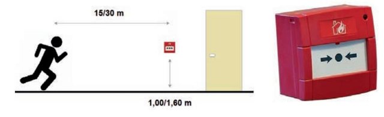
Il pulsante rosso "rompere il vetro": sempre a portata di corsa.
E vanno installati in posizione ben visibile e segnalata, facilmente accessibili.
i camini del boscoIl controllo di fumo e calore
Lo scopo della misura "Controllo fumo e calore" è individuare i presidi che permettono il controllo, l'evacuazione o lo smaltimento dei prodotti della combustione. Si realizza con: aperture di smaltimento di fumo e calore d'emergenza, sistemi di ventilazione orizzontale forzata (SVOF) e sistemi di evacuazione di fumo e calore (SEFC).
Aperture di smaltimento
Vanno bene anche finestre, lucernari, porte che ci sono già. Hanno la sola funzione di facilitare l'opera di estinzione dei soccorritori.
SVOF
ventilazione orizzontale forzataSì, fanno smaltimento d'emergenza: come le aperture, facilitano l'opera dei soccorritori, creando condizioni favorevoli da un punto di accesso fino all'incendio.
SEFC
evacuazione di fumo e caloreCreano e mantengono uno strato d'aria sostanzialmente pulito nella parte bassa dell'ambiente, evacuando fumo e calore.
Le aperture di smaltimento:
- vanno sempre gestite e protette dall'ostruzione accidentale, perché sono parte integrante di una misura antincendio: niente scaffali davanti;
- non devono essere per forza permanentemente aperte: salvo carichi d'incendio elevati, vanno bene anche aperture con apertura automatica (comandata dall'impianto di rivelazione), con infissi comandati da posizione protetta e segnalata o da posizione non protetta, o con chiusura bassofondente (che si scioglie col calore);
- vanno distribuite in modo uniforme e preferibilmente nella parte alta dei locali, per facilitare l'uscita di fumi e gas caldi.
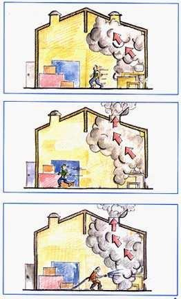
Il fumo sale e riempie la stanza dall'alto. I SEFC lo tirano fuori e tengono pulita la parte bassa, e così raggiungono tutti questi obiettivi:
- mantenere le vie di esodo libere da fumo e calore;
- ritardare o prevenire il flash over, cioè l'incendio generalizzato;
- limitare i danni agli impianti e al contenuto;
- ridurre gli effetti termici sulle strutture.
I SEFC possono essere di tipo naturale (SENFC) o forzato (SEFFC). Quelli naturali hanno evacuatori ad apertura automatica che mantengono uno strato libero da fumo fino a un'altezza stabilita nel progetto, comunque superiore all'altezza di una persona.
prima di andare avantiLe prove della strega
1A che altezza va un pulsante di allarme?
2Le aperture di smaltimento a cosa servono?
3I SEFC dove tengono l'aria pulita?
Capitolo 17
Il primo strumento: l'estintore
il presidio di base, da usare sul principio d'incendio
L'estintore è la bacchetta di base di ogni addetto: c'è sempre, si usa solo sul principio d'incendio, e va scelto, posizionato e segnalato secondo regole precise.
l'armeria contro il fuocoIl controllo dell'incendio
La misura "Controllo dell'incendio" serve a individuare i presidi antincendio da installare per fronteggiare gli eventuali incendi. Questi presidi sono gli estintori e gli impianti di protezione attiva (rete idranti, impianti sprinkler).
Il loro scopo è tutto insieme: proteggere da un principio d'incendio, controllarlo o inibirlo in modo manuale o automatico, e anche spegnerlo del tutto. Gli estinguenti, nel loro insieme, possono mettere in atto tutti e quattro gli effetti: soffocamento, raffreddamento, diluizione e inibizione chimica.
Lo sprinkler svolge soprattutto un'azione di controllo: tiene l'incendio fermo o piccolo, così che le squadre di emergenza lo possano poi attaccare e spegnere facilmente (lo rivedi nel capitolo 18).
la bacchetta di baseCos'è un estintore
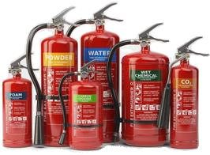
Gli estintori sono un presidio di base, e si usano solo su un principio d'incendio. Devono sempre esserci nei luoghi di lavoro: sono un presidio di base complementare alle altre misure.
Si distinguono per il peso in portatili e carrellati, e per l'agente estinguente: a polvere, ad anidride carbonica, ad acqua e a base d'acqua (schiuma), a "clean agent".
La prestazione di un estintore, cioè quanto è grande il fuoco che riesce a spegnere, è determinata sperimentalmente, in funzione della classe d'incendio, e si scrive con un codice di lettere e numeri, per esempio 13 A - 89 B.
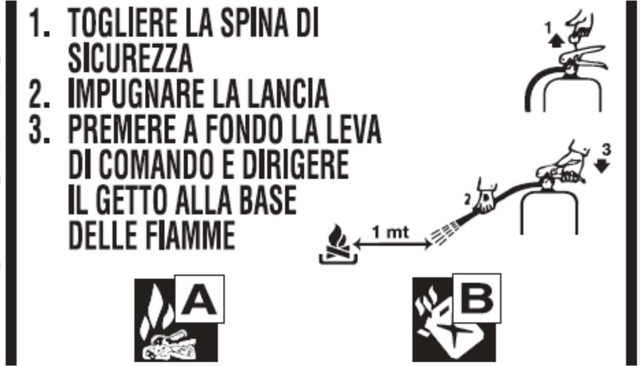
L'etichetta è il foglietto delle istruzioni: dice tipo, classi di fuoco e come si usa. Leggila sempre.
quale bacchetta per quale dragoScegliere l'estintore
- La tipologia va scelta in base alla valutazione del rischio, soprattutto in base alle classi di fuoco: estintori per la classe A, polivalenti AB, per la classe F...
- Nei luoghi chiusi, contro fuochi di classe A o B, salvo incompatibilità, è opportuno usare estintori a base d'acqua (idrici).
Polvere e CO₂ sull'elettrico
Gli estintori portatili si possono usare su impianti elettrici fino a 1000 V, alla distanza di 1 metro, se l'estinguente non conduce elettricità (polvere, anidride carbonica).
Acqua sull'elettrico
Anche quelli a base d'acqua, fino a 1000 V a almeno 1 metro, ma solo se l'etichetta lo dice, perché hanno superato la prova dielettrica.
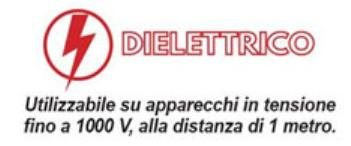
dove si appende la bacchettaPosizione e segnaletica
- Devono essere sempre pronti all'uso: in posizione facilmente visibile e raggiungibile, lungo i percorsi d'esodo vicino alle uscite dei locali, di piano o finali, e vicino alle aree a rischio specifico.
- Le impugnature devono stare a circa 110 cm da terra, così le raggiunge chiunque.
- La loro posizione va sempre segnalata, e il cartello indica anche il tipo: portatile o carrellato.
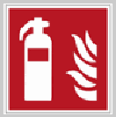
Il punto di installazione di un estintore portatile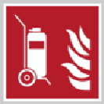
Il punto di installazione di un estintore carrellato (ha le ruote)Come si usa: getto alla base delle fiamme, muovendolo a ventaglio in orizzontale. Il rituale completo è nell'extra "La prova pratica".
prima di andare avantiLe prove della strega
1Un estintore da 30 kg è portatile o carrellato?
2Cosa vuol dire 13 A - 89 B su un estintore?
3Un estintore a CO₂ su un quadro elettrico a 400 V?
Capitolo 18
Fontane e piogge magiche
idranti, naspi, sprinkler e impianti automatici
Idranti e naspi sono fontane fisse che qualcuno deve aprire; sprinkler, diluvio, nebbie e gas sono piogge magiche che partono da sole e spengono o tengono a bada il fuoco.
le fontane fisseLa rete idranti
La rete idranti è un impianto di protezione attiva per il controllo dell'incendio: sì, è un impianto fisso ad azionamento manuale. Si divide in ordinaria, per proteggere le attività all'interno degli edifici, e all'aperto, per le attività che stanno fuori.
I componenti principali sono: alimentazione idrica; rete di tubazioni fisse, preferibilmente chiuse ad anello, ad uso esclusivo; attacchi di mandata per autopompa; valvole; apparecchi erogatori.
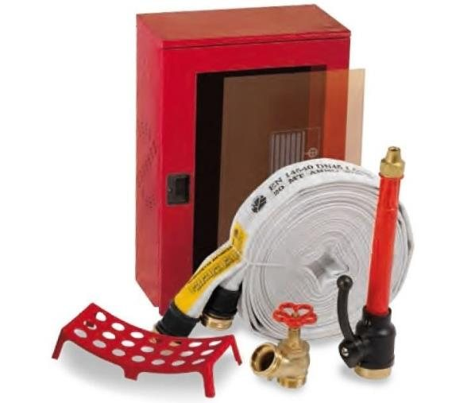
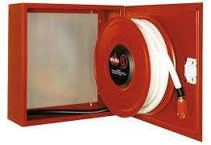
| Erogatore (reti ordinarie) | Diametro | Tubo |
|---|---|---|
| Idrante a muro | DN 45 (45 mm) | Tubazione flessibile lunga in genere 20 metri |
| Naspo | DN 25 (25 mm) | Tubazione semirigida lunga al massimo 30 metri |
I tubi di mandata delle reti idranti possono avere diametro da 45 e 70 mm.
Idrante 45 e 20 metri. Naspo 25 e 30 metri. Il naspo è più piccolo ma ha il tubo più lungo.
le piogge che partono da soleGli impianti automatici
Gli impianti automatici di inibizione, controllo o estinzione possono erogare agenti diversi (acqua, gas, polvere), in relazione alla classe dell'incendio e al rischio dell'attività. Un impianto automatico di estinzione ha la funzione di spegnimento dell'incendio.
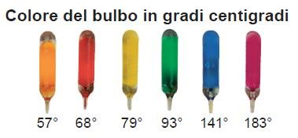
Il colore del bulbo dice a che temperatura si rompe: rosso 68 °C, giallo 79, verde 93, blu 141...
Sprinkler
Serve ad assicurare una pronta risposta all'incendio, rivelandone la presenza e controllandolo in modo che l'estinzione possa essere completata con altri mezzi, oppure estinguendolo nello stadio iniziale. Gli ugelli sono chiusi da elementi termosensibili che a una data temperatura si rompono e fanno uscire l'acqua.
A diluvio
Un sistema fisso che inonda totalmente l'area con acqua sotto pressione, attraverso erogatori sprinkler privi del tappo e dell'elemento termosensibile. Le tubazioni sono vuote: l'acqua aspetta dietro una valvola a diluvio, comandata da un sistema di rivelazione, e quando si apre esce contemporaneamente da tutti gli erogatori.
Sprinkler a umido
Le tubazioni sono costantemente riempite di acqua in pressione.
Sprinkler a secco
Si preferisce quando c'è il rischio che l'acqua nei tubi geli per le temperature troppo rigide.
Water mist
Sistemi ad acqua ad alto potere di spegnimento, a pressioni tra 80 e 140 bar, che fanno una nebbia di particelle finissime.
Deplezione
Sistemi basati sulla riduzione continuativa della concentrazione di ossigeno nell'ambiente: il fuoco non trova abbastanza comburente.
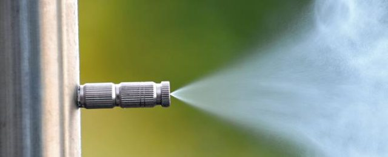
E per un archivio di carta? L'acqua lo rovinerebbe: il metodo più indicato è un impianto automatico di controllo o estinzione con estinguente gassoso.
prima di andare avantiLe prove della strega
1Che diametro ha un naspo, e quanto è lungo il suo tubo?
2Perché si sceglie uno sprinkler a secco?
3Negli impianti a diluvio, gli erogatori hanno il bulbo?
Capitolo 19
Aprire la strada ai cavalieri
l'operatività antincendio per i Vigili del Fuoco
Quando arrivano i Vigili del Fuoco, i cavalieri del villaggio, devono trovare la strada libera, l'acqua pronta, i comandi degli impianti a portata di mano e un modo per salire a tutti i piani.
La misura "Operatività antincendio" ha lo scopo di agevolare l'efficace conduzione degli interventi di soccorso dei Vigili del Fuoco in tutte le attività.
È sempre necessario, in relazione al rischio, progettare soluzioni che aiutino i soccorsi? Sì: agevolare il soccorso dei Vigili del Fuoco è uno dei requisiti per minimizzare il rischio incendio e raggiungere gli obiettivi di sicurezza.
quattro modi di aprire la stradaCosa serve ai cavalieri
- Accessibilità per i mezzi di soccorso: in genere deve essere possibile avvicinare i mezzi a 50 m dagli accessi dell'attività.
- Acqua pronta: rete idranti con protezione interna, oppure, per attività a più piani fuori terra, colonna a secco e rete idranti con protezione esterna, oppure almeno un idrante (della rete interna o di quella pubblica) raggiungibile con un percorso massimo di 500 m dai confini dell'attività.
- Poter controllare o fermare gli impianti (anche quelli di sicurezza): i sistemi di controllo e comando vanno messi in posizione segnalata e facilmente raggiungibile durante l'incendio.
- Accesso protetto a tutti i piani: per esempio l'autoscala dei Vigili del Fuoco (o un mezzo equivalente) deve poter accostarsi a tutti i piani.
due ascensori, due compitiAscensore antincendio e di soccorso
Ascensore antincendio
Un ascensore installato principalmente per gli occupanti, ma con protezioni, comandi e segnalazioni in più che permettono di usarlo anche in caso di incendio, sotto il controllo delle squadre di soccorso.
Ascensore di soccorso
Un ascensore utilizzabile in caso di incendio, installato esclusivamente per trasportare le attrezzature antincendio ed eventualmente per l'evacuazione di emergenza degli occupanti.
Antincendio = di tutti i giorni, ma blindato. Di soccorso = nato per gli attrezzi dei pompieri.
prima di andare avantiLe prove della strega
1A quanti metri dagli accessi devono poter arrivare i mezzi dei Vigili del Fuoco?
2A cosa serve l'operatività antincendio?
3L'ascensore di soccorso è fatto soprattutto per chi?
Capitolo 20
Il patto del villaggio
gestione della sicurezza e piano di emergenza
La sicurezza antincendio è un patto che si rispetta ogni giorno (esercizio) e si mette in pratica quando scoppia l'incendio (emergenza), con un piano scritto che tutti conoscono e in cui gli addetti hanno compiti precisi.
il pattoLa Gestione della Sicurezza Antincendio (GSA)
La GSA è la misura finalizzata a gestire un'attività in sicurezza, sia in esercizio sia in emergenza, con un'organizzazione fatta di ruoli, compiti, responsabilità e procedure. La sua finalità è garantire nel tempo un adeguato livello di sicurezza in caso di incendio.
Si divide in due aspetti: sì, gestione della sicurezza in esercizio e gestione della sicurezza in emergenza.
GSA in esercizio
Comprende tutte queste azioni: adottare e verificare le misure preventive, mettere la segnaletica, far rispettare divieti e limitazioni, controllo e manutenzione di impianti e attrezzature con la compilazione del registro dei controlli; e poi la preparazione all'emergenza (piano, formazione e addestramento degli addetti, esercitazioni e prove di evacuazione periodiche) e la gestione dei momenti più rischiosi (lavori di manutenzione, interferenze, impianti di sicurezza disattivati).
GSA in emergenza
Riguarda l'attivazione e l'attuazione del piano di emergenza.
il tuo ruolo nel pattoGli addetti antincendio
Gli addetti attuano le misure antincendio in esercizio e in emergenza, nei modi stabiliti dal datore di lavoro nei documenti della GSA e nel piano di emergenza.
Nei giorni normali
Attuano le misure antincendio preventive; garantiscono la fruibilità delle vie di esodo; svolgono la sorveglianza dei presidi antincendio.
Nell'emergenza
Mettono in atto le azioni del piano di emergenza; attuano l'evacuazione degli occupanti; eseguono le comunicazioni previste; supportano le squadre di soccorso; spengono un principio di incendio.
tenere vivi gli incantesimiLa manutenzione nel patto
Il controllo e la manutenzione di impianti e attrezzature antincendio è parte integrante e fondamentale della GSA: garantisce nel tempo che funzionino.
Devono avere una manutenzione fatta secondo le disposizioni vigenti, le norme applicate e i manuali del costruttore o installatore: gli impianti elettrici, gli impianti di trasporto e utilizzo di sostanze liquide e gassose infiammabili, gli impianti di processo a rischio d'incendio e i presidi antincendio. Perché? La manutenzione, insieme alla realizzazione a regola d'arte, garantisce il corretto funzionamento e riduce il rischio a un livello accettabile.
il libro delle istruzioniIl piano di emergenza
Il piano di emergenza che il datore di lavoro scrive (D.Lgs. 81/2008) è l'organizzazione della risposta all'emergenza, costruita sulla valutazione del rischio incendio e anche su altri eventi credibili, come un terremoto.
Cosa deve contenere:
- le azioni che i lavoratori devono fare in caso di incendio;
- le procedure di evacuazione per i lavoratori e per le altre persone presenti;
- le disposizioni per chiamare i Vigili del Fuoco e per dare loro le informazioni necessarie al loro arrivo;
- le misure per assistere le persone con esigenze speciali;
- i compiti degli addetti: come dare l'allerta e fare le chiamate di emergenza e soccorso, in particolare ai Vigili del Fuoco; come fare il primo intervento; come avviare e coordinare l'evacuazione;
- istruzioni scritte chiare e una o più planimetrie dei luoghi con l'ubicazione dei presidi antincendio.
Altre regole del piano:
- deve indicare un numero di addetti adeguato, congruo con turni e assenze ordinariamente prevedibili;
- va fatto conoscere a tutti i lavoratori, anche se non addetti: il piano indica come assicurare che tutto il personale sia informato;
- se nello stesso edificio ci sono più luoghi di lavoro con titolari diversi, i piani vanno coordinati, in modo che siano coerenti fra loro;
- la gestione dell'emergenza va preparata durante l'attività normale e provata con prove periodiche;
- per le persone con ridotte capacità sensoriali o motorie servono misure di supporto, con allarmi adatti: dispositivi sensoriali (luci, scritte luminose, dispositivi a vibrazione) e messaggi da altoparlanti, per esempio con il sistema EVAC.
la formula per chiamare i cavalieriLa chiamata ai Vigili del Fuoco
Il piano deve indicare le procedure per chiamare i Vigili del Fuoco, dando le informazioni utili:
- l'indirizzo del luogo di lavoro;
- la tipologia di emergenza e la gravità;
- eventuali infortunati e materiali o sostanze pericolose presenti;
- le informazioni su accesso e vie preferenziali per arrivare.
quando suona la campanaDurante l'emergenza
- Chi scopre un incendio deve dare l'allarme secondo le indicazioni del piano di emergenza, evitando di trasmettere agitazione agli altri.
- I lavoratori devono seguire le indicazioni del piano di emergenza scritto dal datore di lavoro.
- Oltre al sistema d'esodo, sì, il datore di lavoro deve predisporre nel piano le procedure di evacuazione.
- Nell'evacuazione gli addetti hanno un ruolo fondamentale: assicurano e sovrintendono il corretto svolgimento delle procedure.
Le azioni degli addetti durante l'evacuazione sono tutte queste:
Prima
Accertarsi che le uscite di sicurezza siano fruibili.
Durante
Sorvegliare la corretta evacuazione, controllare che nessuno abbia problemi a raggiungere l'uscita, assistere le persone con necessità specifiche (disabili) fino al punto di raccolta.
Dopo
Riunire gli occupanti al punto di raccolta, fare l'appello per verificare che ci siano tutti, e controllare che restino nelle aree stabilite fino alla fine dell'emergenza.
prima di andare avantiLe prove della strega
1La GSA in emergenza in cosa consiste?
2Il piano di emergenza va fatto conoscere solo agli addetti?
3Cosa dici al telefono ai Vigili del Fuoco?
Capitolo 21
Le maschere
i DPI per le vie respiratorie
Le maschere a filtro puliscono l'aria che c'è, ma non creano ossigeno: se ce n'è meno del 17% serve un respiratore isolante, con la sua scorta d'aria.
Gli apparecchi di protezione delle vie respiratorie sono tutti DPI di III categoria, la più alta: per usarli servono formazione e addestramento.
Respiratori a filtro
Filtrano l'aria dell'ambiente. In base all'inquinante si dividono in antipolvere, antigas e combinati. La maschera a filtro si può usare solo dove l'ossigeno non è inferiore al 17%.
Respiratori isolanti
Ti isolano dall'ambiente e ti danno aria pulita da una riserva. Gli autorespiratori a ciclo aperto hanno bombole che contengono aria compressa (non ossigeno puro): l'aria espirata esce fuori.
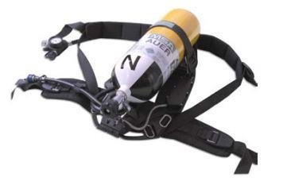
L'autorespiratore: la bombola sulla schiena è piena d'aria compressa, come quella dei sub.
17 è il numero della maschera: sotto il 17% di ossigeno il filtro non serve a niente.
prima di andare avantiLe prove della strega
1Con il 15% di ossigeno posso usare la maschera a filtro?
2Cosa c'è nelle bombole degli autorespiratori a ciclo aperto?
3Di che categoria sono i DPI per le vie respiratorie?
Extra
Numerini e ripassini
tutti i numeri magici in una pagina
Il giorno prima dell'esame rileggi solo questa pagina: ci sono tutti i numeri che escono nelle domande, e le coppie di concetti che il goblin prova a farti confondere.
il fuocoCombustione e gas
persone e vie di fugaEsodo e allarme
gli strumentiEstintori, idranti, impianti
le trappole del goblinLe coppie da non confondere
| Questo | Non confonderlo con |
|---|---|
| Accensione: brucia da solo, senza innesco, per tutte le sostanze | Infiammabilità: solo liquidi, vapori che bruciano con innesco |
| Deflagrazione: più lenta del suono | Detonazione: più veloce del suono |
| Attiva: serve un'azione (estintori, idranti, naspi) | Passiva: nessuna azione (vie di esodo, porte EI, anche col magnete) |
| Sorveglianza: controllo visivo, anche un lavoratore istruito | Controllo periodico: solo il tecnico manutentore qualificato |
| R: portante | E: tenuta ai fumi; I: isolamento dal calore |
| Reazione al fuoco: quanto il materiale aiuta il fuoco | Resistenza al fuoco: quanto la struttura regge e separa |
| Luogo sicuro: per sempre | Spazio calmo: temporaneo, si aspetta aiuto |
| CO: tossico, invisibile, senza odore | CO₂: asfissiante, non tossica |
| Ascensore antincendio: per gli occupanti, usabile coi soccorritori | Ascensore di soccorso: per le attrezzature |
| Sprinkler a umido: tubi pieni d'acqua | A secco: dove l'acqua gelerebbe |
| Cartello naspo (nel quiz): tubo appeso a zig-zag | Cartello idrante (nel quiz): tubo a spirale |
E l'ultimo incantesimo: quando una risposta dice "solo", "esclusivamente" o "mai", controlla due volte. Spesso è il goblin.
Extra
La prova pratica
si dice leviosa, non leviosà
Alla prova pratica userai l'estintore e farai una manovra con l'idrante UNI 45 oppure con il naspo, rispondendo anche a domande su come si usano: qui c'è ogni gesto, in ordine.
Durante l'addestramento e la prova si indossano tutti i DPI previsti. Respira: sono pochi gesti, sempre gli stessi.
primo ritualeL'estintore portatile
- Con la mano dominante afferra la valvola di erogazione; appoggia l'altra mano, a palmo aperto, sotto la base. Sgancia l'estintore dal muro.
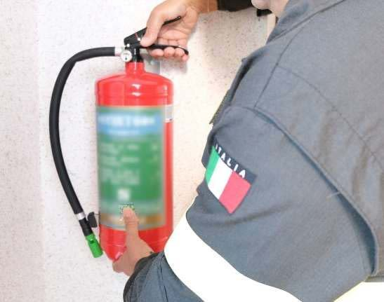
- Appoggialo a terra.
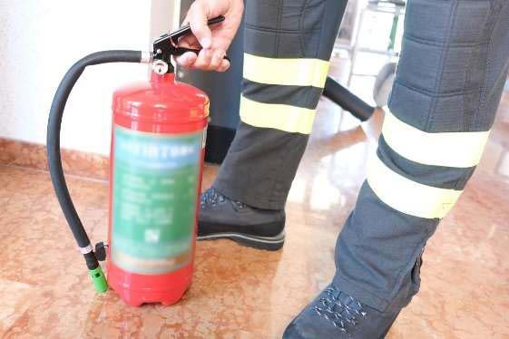
- Con l'estintore a terra, tieni la mano dominante sulla valvola senza premere e con l'altra mano togli la spina di sicurezza.
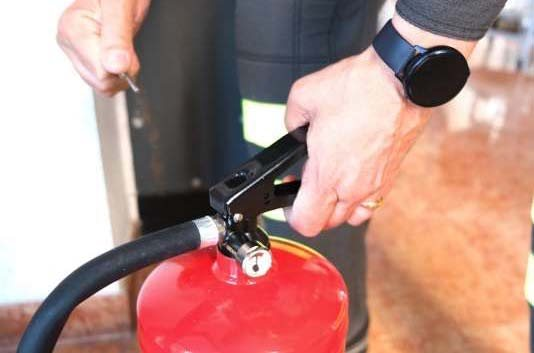
- Risollevalo con la mano dominante e con l'altra afferra la manichetta vicino all'estremità, per orientare il getto.
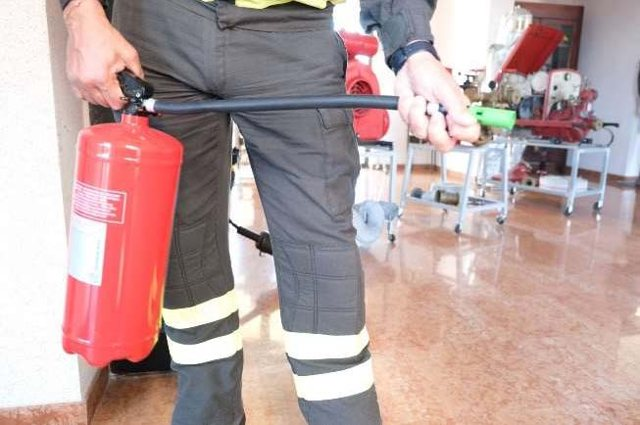
Come spegnere:
- avvicinati alla giusta distanza, compatibile con il calore;
- stai sopravento, col vento alle spalle;
- avanza basso, sotto il fumo;
- getto alla base delle fiamme, muovendolo a ventaglio;
- parti dalle fiamme più vicine e vai verso quelle lontane;
- su un liquido non sparare dentro il recipiente: schizzerebbe fuori;
- in due: mai uno di fronte all'altro, angolo non oltre 90°;
- prima di andare, controlla che sia davvero spento;
- mai l'ascensore (tranne quelli antincendio e di soccorso).
secondo ritualeIl naspo (un operatore)
Il tubo è già collegato al rubinetto e alla lancia, avvolto su una bobina.
- Apri lo sportello e ruota il naspo di lato, aprendolo a compasso.
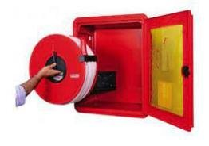
- Apri il rubinetto per mettere in pressione il tubo.
- Impugna il tubo con la mano destra vicino alla lancia e l'altra poco più avanti; vai verso il fuoco col tubo sul lato destro: si srotola da solo.
- A circa 5-6 metri fermati in posizione sicura e apri la lancia.
terzo ritualeL'idrante a muro UNI 45 (un operatore)
Nella cassetta c'è la manichetta da 45 mm, già avvitata all'idrante e alla lancia, avvolta in doppio.
- Apri lo sportello (se è in policarbonato si rompe). Prendi la manichetta e appoggiala a terra in orizzontale.
- Impugna la lancia con la mano destra vicino alla leva, controllando che sia chiusa. Vai verso l'incendio tenendo la manichetta sul lato destro.
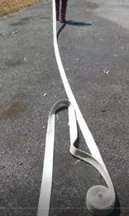
- A manichetta tutta stesa, girati e controlla che non ci siano pieghe. Torna alla cassetta e apri la valvola.
- Quando la manichetta è piena e in pressione, torna alla lancia e aprila, scegliendo getto pieno o frazionato.
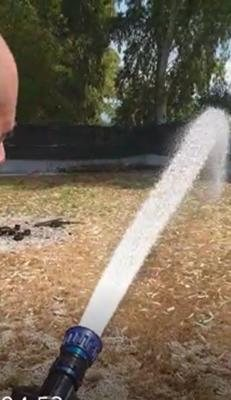
La formula dell'idrante: lancia chiusa, stendi tutto, niente pieghe, apri la valvola, poi apri la lancia.